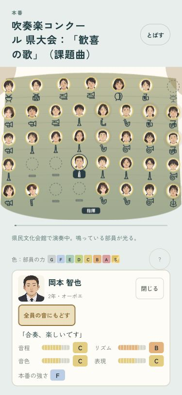
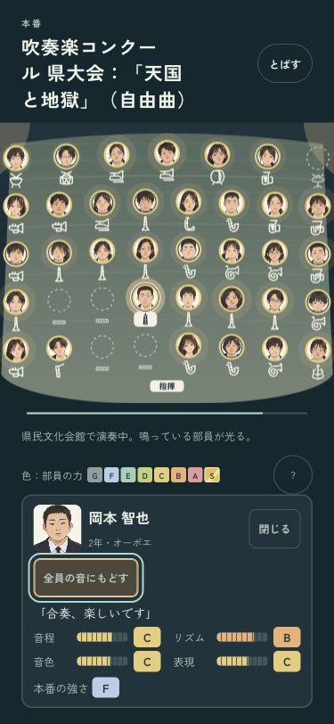
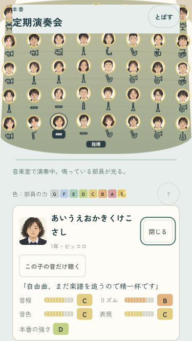
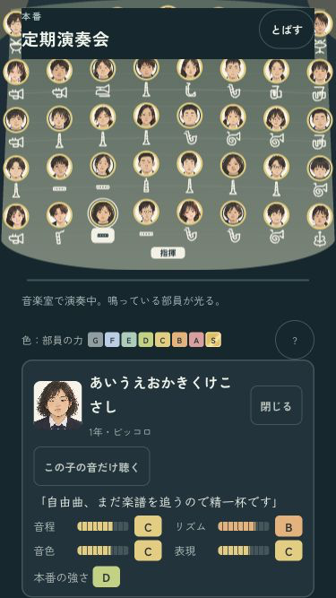

B · 舞台の中へ
ひとりを聴いて、舞台へ戻る。
本人の音を聴いている間は金色の枠で表示。カードを閉じたら、全員の音に戻ります。Escapeでもカードだけを閉じられ、演奏は続きます。
「本番の演奏をはじめる」から、舞台の顔を押すと本人のカードが開きます。確認ページはセーブを書き換えません。


小さい画面・長い名前も確認


iPhoneへ導入済み。端末がロック中のため、今回は起動未確認です。ミラーリングなし。
codex/design · pushなし · 変更と確認の記録